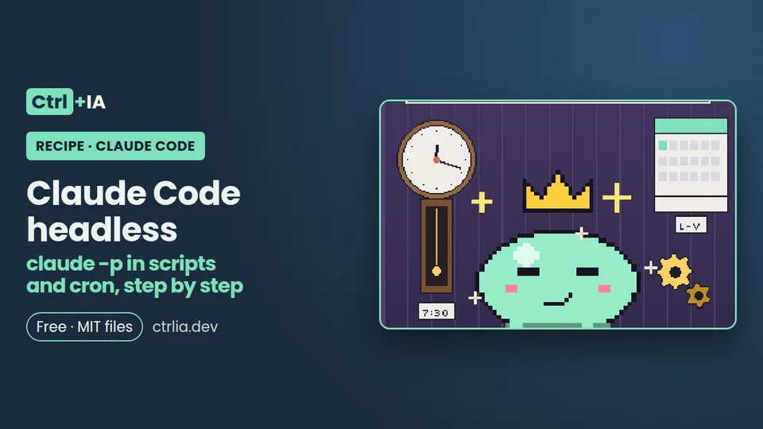

Recipe · Intermediate · 15 min
Claude Code headless: claude -p in scripts and cron, step by step
Use claude -p in a cron script: a daily commit summary with minimal permissions, a turn cap, JSON output and your subscription login. Tested.

Tested with Claude Code 2.1.316 · reviewed
See the files on GitHub Free · MIT license
The problem
Some tasks you ask Claude Code for every day with the same words: summarize yesterday's commits, explain an error log, review a diff before pushing it. Claude Code does not need its interface for them: with claude -p it takes a prompt, does the task and returns text or JSON, so you can call it from a script or from cron. The hard part is the details nobody tells you: what happens to permissions when nobody is there, how login works under cron, and why headless mode can burn noticeably more of your 5-hour limit.
The solution
We will set up a daily commit summary that runs on its own, with minimal permissions, a turn cap and checkable JSON output. All the files are in the free repository ctrlia-claude-code-headless-cron (the English versions are in its en/ folder).
1. Try claude -p by hand
The -p (or --print) flag runs Claude Code non-interactively: it reads the prompt (and whatever you pass on standard input), works with its tools and writes the result to standard output. It exits with code 0 when everything goes well and non-zero when it fails, so your script can decide what to do.
claude -p "¿Qué hace el módulo auth?"(The prompt asks "What does the auth module do?"; write yours in any language.) If it answers, you have everything you need. Use it for repetitive tasks with a clear result: summarizing the day's commits, explaining an error log, reviewing a diff before pushing it, or generating release notes. Do not use it for open-ended tasks like "improve the project": with nobody reviewing, a vague task spends a lot and produces little. For GitHub pull requests we already have the PR review with GitHub Actions recipe; this one is for your PC or your server, with no GitHub involved.
2. Grant only the permissions it needs
In a normal session Claude asks you before editing or running something. In -p there is nobody to ask. Since v2.1.302, if nothing sets a permission mode, claude -p starts in Manual mode: anything that needs approval is denied. We checked it: asked to "create hola.txt" without permissions, it answered that it could not, and the JSON listed the call in permission_denials (real excerpt, in Spanish because of our settings):
{
"is_error": false,
"result": "No he podido crear `hola.txt`. El permiso para escribir ... fue denegado automáticamente, porque esta sesión no tiene forma de pedir aprobación.",
"permission_denials": [
{"tool_name": "Write", "tool_input": {"file_path": ".../hola.txt", "content": "hola\n"}}
]
}You have three levers:
--allowedTools "Bash(git log *)"approves only what you name. The space before*matters:Bash(git diff*)would also acceptgit diff-index.--permission-mode acceptEditslets it write files without asking, but not run other commands.--permission-prompts none(v2.1.259 or later) tells Claude that nobody can approve and that it should not retry: ideal for cron.
Watch out for compound commands: with Bash(python3 -m unittest *) approved, Claude tried python3 -m unittest ... ; echo $? and was denied, because the rule does not cover the echo part. Grant the minimum, and if something is missing you will see it in permission_denials. Rules are explained in depth in the Claude Code permissions recipe.
3. Ask for JSON output (with a schema if you need one)
With --output-format json you get an object with result (the text), is_error, num_turns, session_id, permission_denials and total_cost_usd (an estimate at list price, not your bill). If you need data with a fixed shape, add --json-schema with a JSON Schema: the response carries structured_output with those fields.
claude -p "Summarize in English the commits from the last 24 hours (git log --since=24.hours --oneline)." \
--model haiku --max-turns 4 \
--permission-prompts none \
--allowedTools "Bash(git log *)" \
--no-session-persistence \
--output-format json \
--json-schema '{"type":"object","properties":{"summary":{"type":"string"},"commits":{"type":"integer"}},"required":["summary","commits"]}' \
< /dev/null | jq '.structured_output'In our test, with the schema {summary: string, commits: integer}, it returned {"summary": "There are 2 commits...", "commits": 2}. The documentation warns that if Claude does not manage to produce the output (for example, because it refuses the task), the field is missing: check it before using it.
To read the JSON on Linux, install jq (sudo apt install jq) and use jq -r '.result' or jq -e '.is_error == false', which returns an error if the run failed. If you want to watch progress in real time, --output-format stream-json --verbose emits one JSON event per line; cron does not need it.
4. Set limits: turns, budget, model and standard input
Always set a ceiling:
--max-turns 6stops the run with an error if Claude goes on and on.--max-budget-usd 0.50stops when the estimated spend reaches that figure (it can overshoot a little, so leave a margin).--model haikuis enough for summaries. In our test the same job cost an estimated 0.009 USD with Haiku versus 0.20 USD with Opus, because Opus also loaded the whole configuration context.--no-session-persistenceavoids saving to disk a session you will never resume.< /dev/nullat the end: without it, Claude Code waits 3 seconds in case something arrives on standard input and writesWarning: no stdin data received in 3sto stderr.
If you call Claude with an API key (not your subscription), add --bare: it does not load hooks, skills, plugins, MCP servers or CLAUDE.md, so the result is the same on any machine. It does not work with the subscription, because --bare does not read the stored login.
5. Create the cron script
Save this script (en/git-summary.sh in the repository) as ~/bin/git-summary.sh and make it executable with chmod +x ~/bin/git-summary.sh. Change PROJECT to your repository path (or pass it as an environment variable):
#!/usr/bin/env bash
# Daily commit summary with Claude Code in headless mode
set -euo pipefail
export PATH="$HOME/.local/bin:/usr/local/bin:/usr/bin:/bin"
# Server without a browser: uncomment if you use a token from claude setup-token
# source "$HOME/.config/claude-token.env"
command -v jq > /dev/null || { echo "jq is missing: install it with sudo apt install jq" >&2; exit 1; }
PROJECT="${PROJECT:-$HOME/projects/my-app}"
DEST="${DEST:-$HOME/reports}"
mkdir -p "$DEST"
cd "$PROJECT"
output="$DEST/git-$(date +%F).json"
claude -p "Summarize in English the commits from the last 24 hours (use git log --since=24.hours --stat). Group them by topic and mark anything that looks risky with [REVIEW]. If there are no commits, say so in one line." \
--model haiku \
--max-turns 6 \
--max-budget-usd 0.50 \
--permission-prompts none \
--allowedTools "Bash(git log *)" \
--no-session-persistence \
--output-format json \
< /dev/null > "$output"
# Fails (and cron writes it to the log) if the run ended in an error
jq -e '.is_error == false' "$output" > /dev/null
jq -r '.result' "$output" > "${output%.json}.md"The prompt asks Claude to summarize the last 24 hours of commits, group them by topic, flag risky ones with [REVIEW] and say so in one line if there are none. Three cron details break almost every first attempt, and the script already handles them:
- The PATH: cron uses a minimal PATH and cannot find
claude, which the installer puts in~/.local/bin; that is why the script exports it. - The directory: cron starts in your home folder, so the script does
cdinto the project. - Overlapping runs: if one day it takes longer,
flock -n(in the crontab line of the next step) prevents a second copy from starting.
6. Schedule it in cron and sort out the login
Open your crontab with crontab -e and add this line. It runs Monday to Friday at 7:30 and saves output and errors to a log:
30 7 * * 1-5 flock -n /tmp/git-summary.lock "$HOME/bin/git-summary.sh" >> "$HOME/reports/cron.log" 2>&1About the login: on Linux, your subscription session is stored in ~/.claude/.credentials.json, and cron, which runs as your user, uses it. If the server has no browser or the session expires, run claude setup-token on your PC: it generates a one-year token that you put in the CLAUDE_CODE_OAUTH_TOKEN variable, stored in a file with 600 permissions and never in the repository:
# On your PC (opens the browser once and prints the token; it does not store it)
claude setup-token
# On the server: keep it outside the repository and readable only by you
install -m 600 /dev/null ~/.config/claude-token.env
echo 'export CLAUDE_CODE_OAUTH_TOKEN=paste-the-token-here' > ~/.config/claude-token.env
# And at the top of git-summary.sh (the line is already there, commented out):
# source "$HOME/.config/claude-token.env"7. Watch your usage: your limit may last less
Issue #97074, opened on 25 September 2026 with 146 reactions, measures on a Max plan that the same workload with claude -p uses about 1.8 times more of the 5-hour window than the interactive session, with the same number of tokens (A/B test with v2.1.282 and Opus 5). The Agent SDK help page says that claude -p draws from your subscription limits, but not that it does so with a different weight, and Anthropic has neither documented nor fixed it as of today (1 Nov 2026). It is not an official figure: treat it as a risk.
In practice: use a small model for small tasks, cap turns, do not launch dozens of runs a day on the subscription, check /usage in a normal session during the first week and, if you automate a lot, consider an API key with --max-budget-usd, where you pay for what you use. We will review the issue every month. If you are unsure which plan suits you, see how much Claude Code costs.
Check it
Run the script by hand before leaving it in cron:
PROJECT="$HOME/projects/my-app" ~/bin/git-summary.sh; echo "exit $?"
cat ~/reports/git-$(date +%F).mdIt should end with exit 0 and leave in ~/reports/ the run's .json and the .md with the summary. If the run fails (is_error set to true), the script exits with an error and, under cron, the reason ends up in ~/reports/cron.log.
What we checked with Claude Code 2.1.316 on Linux on 1 Nov 2026: --json-schema returned structured_output with 2 commits; with --permission-prompts none and no permissions, writing hola.txt ended up in permission_denials; a compound command outside the approved rule was denied; without < /dev/null the 3-second stdin warning appeared; and the estimated cost was 0.009 USD with Haiku and 0.20 USD with Opus. We ran the script with a simulated claude and jq (it creates both files and fails if is_error is true or jq is missing). We have not yet tested it with the real jq or by leaving the cron line running for a whole day, and we have not measured the extra usage from #97074, because that would mean burning limit on purpose.
Why it works
-p turns Claude Code into a normal command-line program: input through arguments and stdin, result through stdout, and an exit code the script can check. Since nobody is there to approve permissions, Claude Code denies anything not approved in advance (Manual mode since v2.1.302) and records it in permission_denials; --allowedTools opens exactly what you name and --permission-prompts none stops Claude from insisting. The caps (--max-turns, --max-budget-usd) and the small model bound the spend, and --output-format json gives the script a reliable is_error field to fail visibly. Cron runs as your user, so it uses your stored login. More details in the headless mode documentation, the CLI reference, permission modes, authentication and costs.
Common mistakes
- The log says
claude: command not found→ cron uses a minimal PATH → exportPATH="$HOME/.local/bin:$PATH"at the top of the script or use the full path fromcommand -v claude. - Claude says it cannot write or run something → since v2.1.302
-pstarts in Manual mode and denies whatever needs approval → add only what is needed with--allowedToolsor--permission-mode acceptEditsand checkpermission_denialsin the JSON. - A command that looked approved gets denied → it was a compound command (
...; echo $?) and the rule only covers the first part → approve each command or ask in the prompt not to chain them. - It takes 3 seconds to start and prints
Warning: no stdin data received in 3s→ Claude Code waits for data on stdin → add< /dev/nullif you pass nothing. --barefails with the subscription →--baredoes not read the stored login → use it only with an API key.structured_outputis missing from the JSON → Claude did not manage to produce the output (for example, it refused the task) → check the field before using it.- The server loses the login → it has no browser or the session expired → use
claude setup-tokenandCLAUDE_CODE_OAUTH_TOKENin a file with 600 permissions.
FAQ
Does it work with my Pro or Max subscription, or do I need an API key?
It works with the subscription: claude -p uses the same login as the normal session and draws from your limits. An API key is only required if you use --bare, which does not read the stored login.
My cron does nothing and the log says "claude: command not found".
Cron uses a minimal PATH. Export PATH="$HOME/.local/bin:$PATH" at the top of the script or use the full path from command -v claude.
Why does it take 3 seconds to start and print a stdin warning?
Claude Code waits in case you pass data on standard input. Add < /dev/null at the end of the command if you pass nothing.
Claude says it cannot write a file. Is it broken?
No: since v2.1.302 -p starts in Manual mode and denies whatever needs approval. Add only what is needed with --allowedTools or --permission-mode acceptEdits, and check permission_denials in the JSON.
Is it true that it uses more limit than the normal session?
There is a report (#97074, open, 146 reactions) that measures about 1.8 times more use of the 5-hour window with the same tokens. Anthropic has neither documented nor confirmed it. Cap turns, use Haiku for small tasks and watch /usage.
Can I continue a previous run?
Yes, by removing --no-session-persistence: save session_id from the JSON and run it later with claude -p "sigue" --resume "$session_id", or use --continue for the latest one.
What about Claude Code's own scheduled tasks (/loop, routines)?
They exist (see scheduled-tasks and routines in the documentation) and serve other cases; cron with -p is the simplest option when you already have a Linux server and want full control.